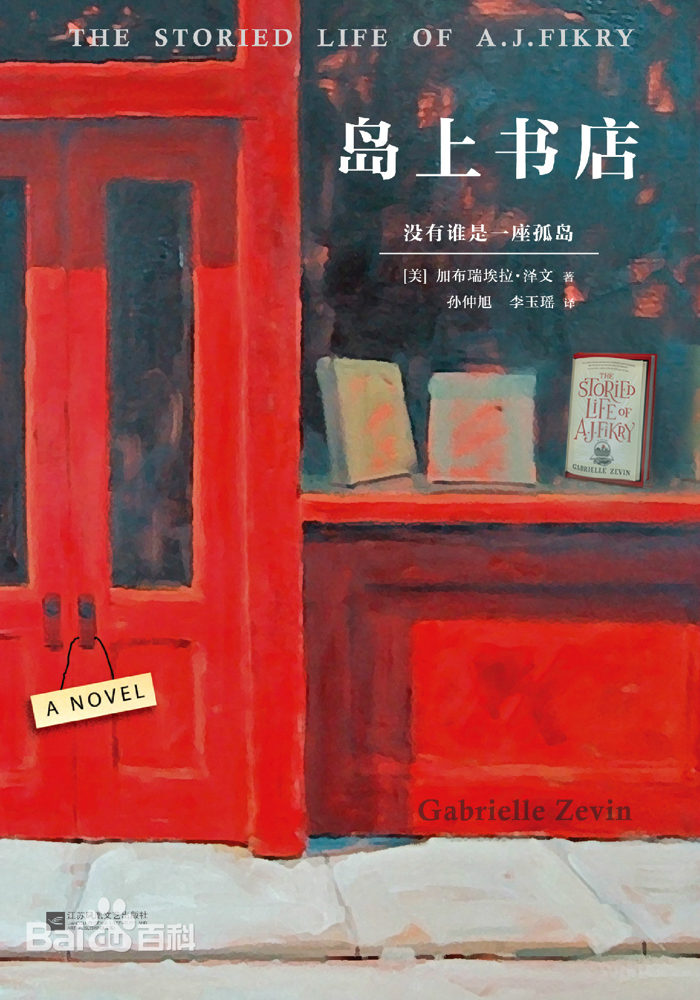
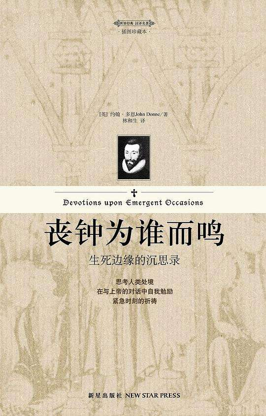
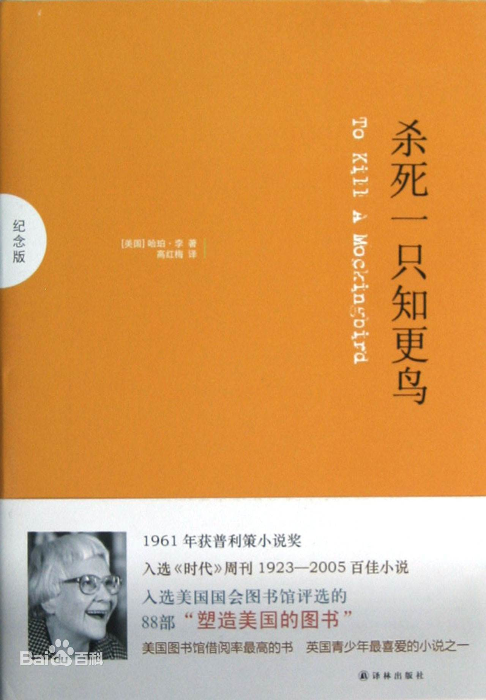

好书共享
Xiaowei Zhou's homepage

内容简介：岛上书店是间维多利亚风格的小屋，门廊上挂着褪色的招牌，上面写着：没有谁是一座孤岛，每本书都是一个世界。
A．J．费克里，人近中年，在一座与世隔绝的小岛上，经营一家书店。 命运从未眷顾过他，爱妻去世，书店危机，就连唯一值钱的宝贝也遭窃。他的人生陷入僵局，他的内心沦为荒岛。就在此时，一个神秘的婴儿出现在书店中，意外地拯救了陷于孤独绝境中的A．J．，成为了连接他和小姨子伊斯梅、警长兰比亚斯、出版社女业务员阿米莉娅之间的纽带，为他的生活带来了转机。
小岛上的几个生命紧紧相依，走出了人生的困境，而所有对书和生活的热爱都周而复始，愈加汹涌。

《丧钟为谁而鸣》讲述的是美国青年罗伯特·乔丹在大学里教授西班牙语，对西班牙有深切的感情。他志愿参加西班牙政府军，在敌后搞爆破活动。为配合反攻，他奉命和地方游击队联系，完成炸桥任务。他争取到游击队队长巴勃罗的妻子比拉尔和其他队员的拥护，孤立了已丧失斗志的巴勃罗，并按部就班地布置好各人的具体任务。在纷飞的战火中，他和比拉尔收留的被敌人糟蹋过的小姑娘玛丽亚坠入爱河，藉此抹平了玛丽亚心灵的创伤。在这三天中，罗伯特历经爱情与职责的冲突和生与死的考验，人性不断升华。在炸完桥撤退的时候，自己却被敌人打伤了大腿，独自留下阻击敌人，最终为西班牙人民献出了年轻的生命。

该小说讲述一个名叫汤姆·鲁滨逊的年轻人，被人诬告犯了强奸罪后，只是因为是一个黑人，辩护律师阿蒂克斯·芬奇尽管握有汤姆不是强奸犯的证据，都无法阻止陪审团给出汤姆有罪的结论。此一妄加之罪，导致汤姆死于乱枪之下。 [1] 虽然故事题材涉及种族不平等与强暴等严肃议题，其文风仍温暖风趣。小说以第一人称著成，叙述者的父亲阿提克斯·芬奇在书中为道德端正的角色，亦是正直律师的典范。